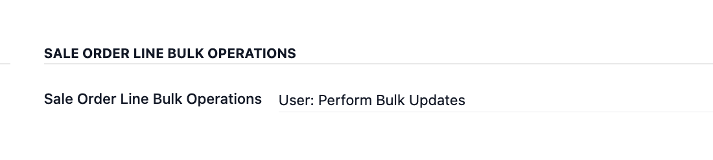
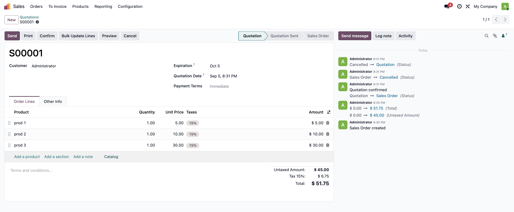
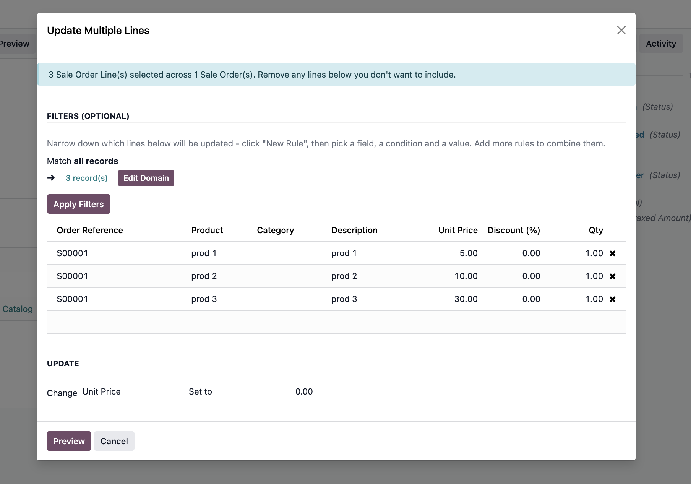
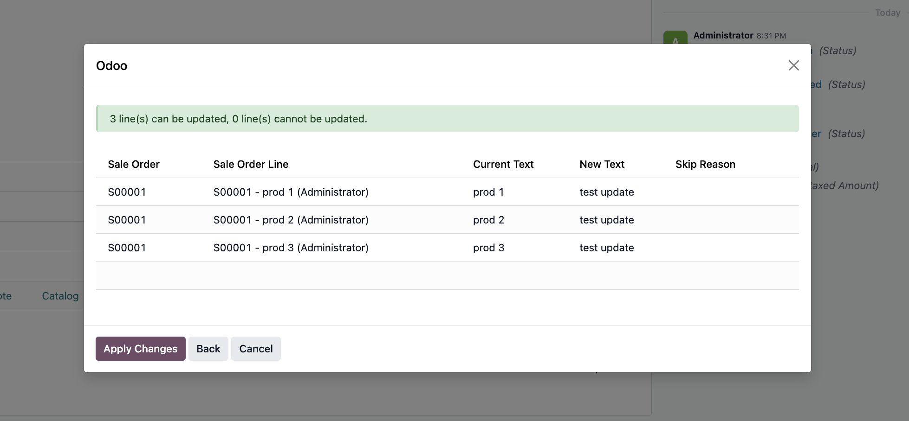
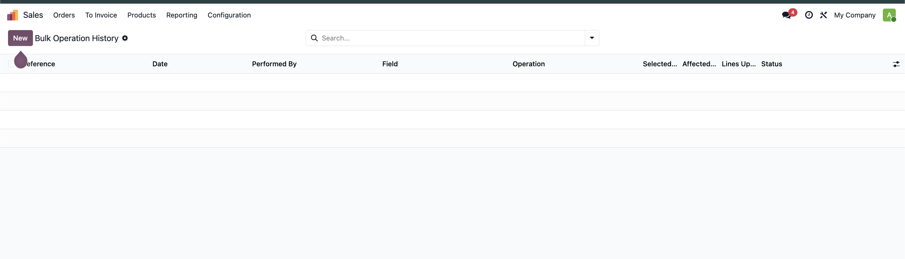

Sales made simpler
Update many quotation lines in a few clicks
Change prices, discounts, quantities or descriptions across multiple quotations. Review every change before you apply it.
Built for quotations
Fast updates with a clear review step
Find the lines you need, choose what to change, check the result, then apply. Confirmed sales orders are protected and cannot be changed by this tool.
What you can update
Use one simple tool for the common changes your sales team makes on quotations.
Price, discount and quantity
Set a value or increase and decrease it by a percentage or fixed amount.
Line description
Replace text or add text before or after the existing description.
History and safe undo
See who made each update and when. Managers can undo lines that have not changed since.
See the full process
From access setup to preview and history, every step stays inside Odoo Sales.

Step 1. Give access. Choose Bulk Operations User for people who apply updates. Choose Bulk Operations Manager for people who also need to review every update and use Undo Operation.

Step 2. Open a quotation. Click Bulk Update Lines while the quotation is still open. The button is hidden after confirmation.

Step 3. Choose the change. Keep or remove lines, add filters if needed, select a field, and enter the new value.

Step 4. Review before applying. Check each current and new value. Click Apply Changes only when everything looks right.

Step 5. Check the history. Each completed update is saved with its date, user, field, operation, line count and status. A Bulk Operations Manager can open an entry and click Undo Operation. Lines changed after the update are left untouched.